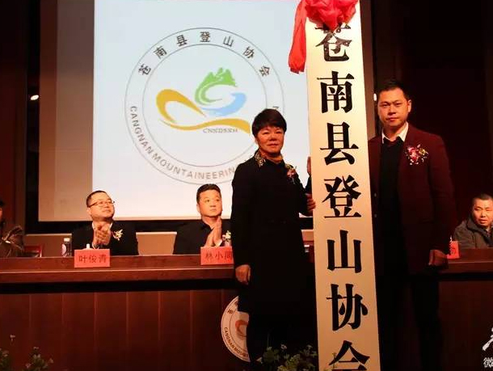

主页>>新闻
[苍南登协]：苍南县登山协会成立了！
时间：2016-11-19 18:00
为进一步推动全民健身运动和群众性登山运动的发展，提高全县登山运动及其相关运动水平，在广大登山爱好者的积极倡议下，1月30日，苍南县登山协会成立大会暨首届一次会员大会在县实验一小艺术厅举行。为进一步推动全民健身运动和群众性登山运动的发展，提高全县登山运动及其相关运动水平，在广大登山爱好者的积极倡导下，1月30日，苍南县登山协会成立大会暨首届第一次会员大会在县实验一小艺术厅举行。
阅读更多>
[苍南登协]：苍南县登山协会成立了！
时间：2016-11-19 18:00
为进一步推动全民健身运动和群众性登山运动的发展，提高全县登山运动及其相关运动水平，在广大登山爱好者的积极倡议下，1月30日，苍南县登山协会成立大会暨首届一次会员大会在县实验一小艺术厅举行。为进一步推动全民健身运动和群众性登山运动的发展，提高全县登山运动及其相关运动水平，在广大登山爱好者的积极倡导下，1月30日，苍南县登山协会成立大会暨首届第一次会员大会在县实验一小艺术厅举行。
阅读更多>
1
2
3
4
•••
15
16
共13页，去第
页
类别
协会新闻
行业新闻